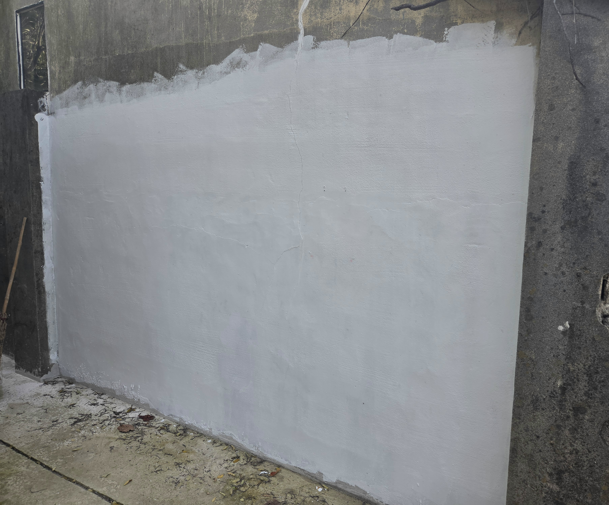
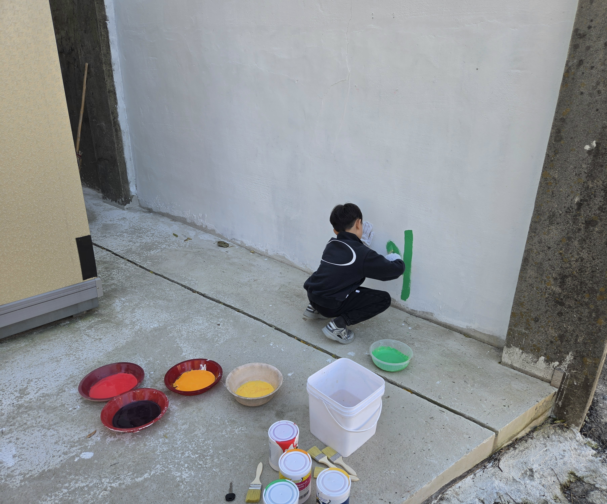
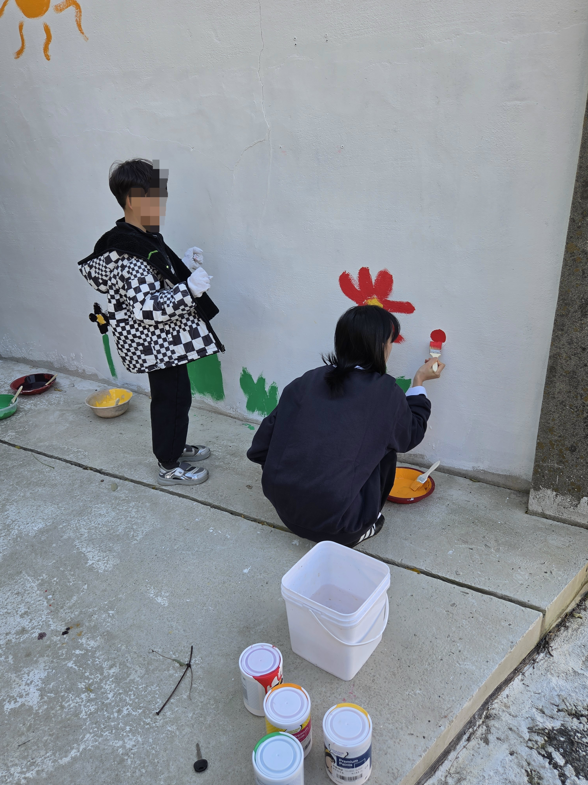
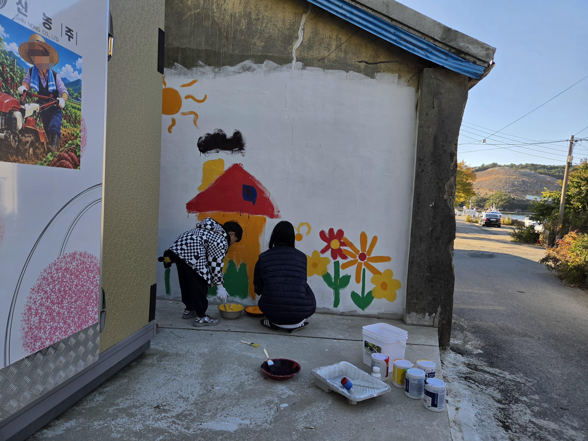
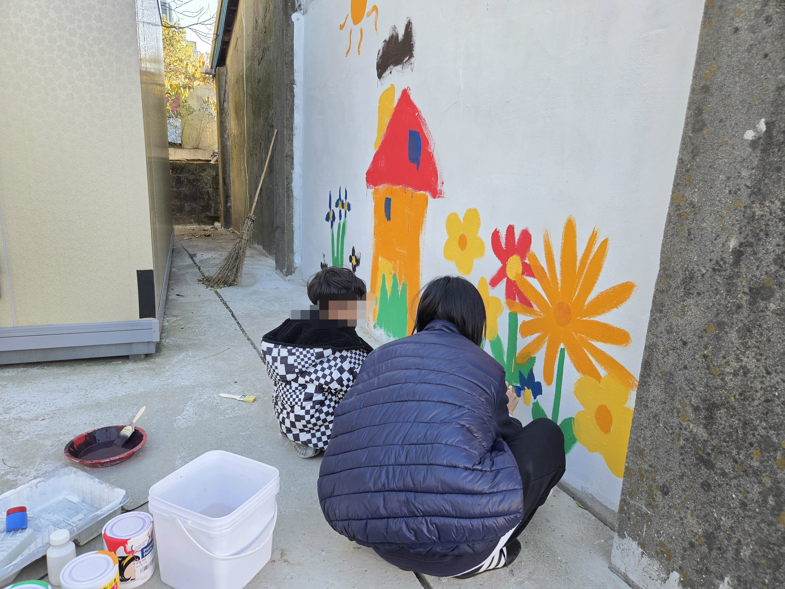
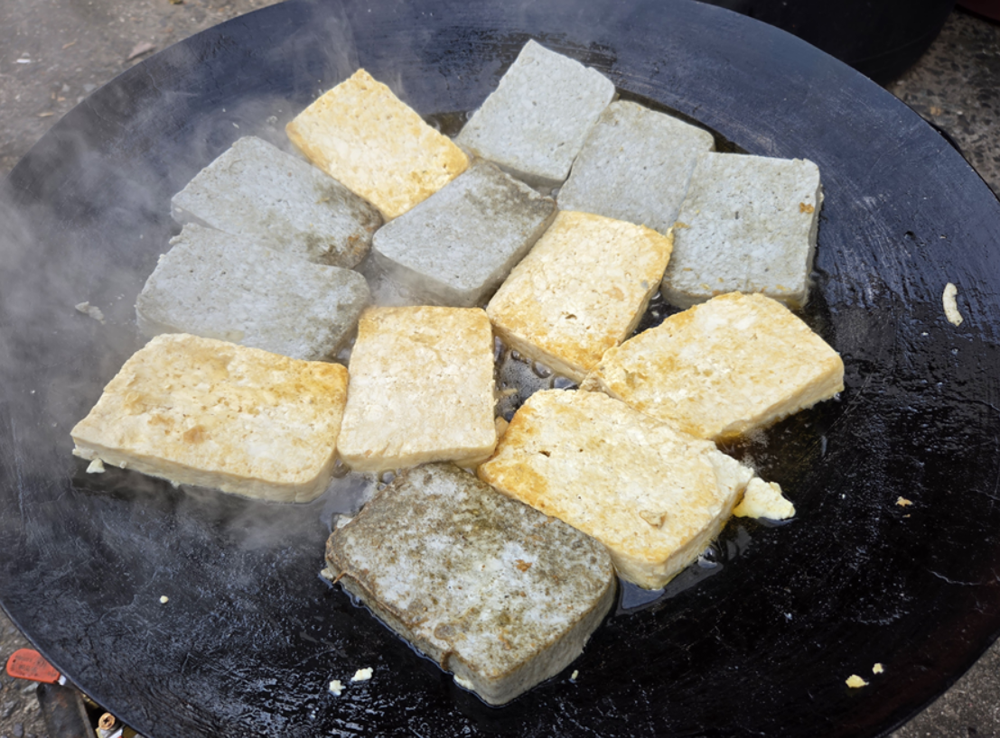

조카님에게 선물할 새하얀 도화지를 위해
전날부터 빡세게 젯소 발라놓음.
창고건물이고 건물주의 허락은 받지 않았다만
아무튼 괜찮을게 뻔해서 속행.

그림 그리시는 조카님.
페인트칠을 위해 다수의 딸기다라이가 희생되었음.

조카님의 엄마인 호적메이트 소환.


모자가 사이좋게 벽화그리는 모습 X
조카님이 폭주하고 그걸 수습하는 호적메이트 ○

마지막은 들기름에 지진 손두부 먹으면서 마무리.

마지막 너무 퐁력적 이에요ㅜㅜㅜ
저기에 김치 얹으면..